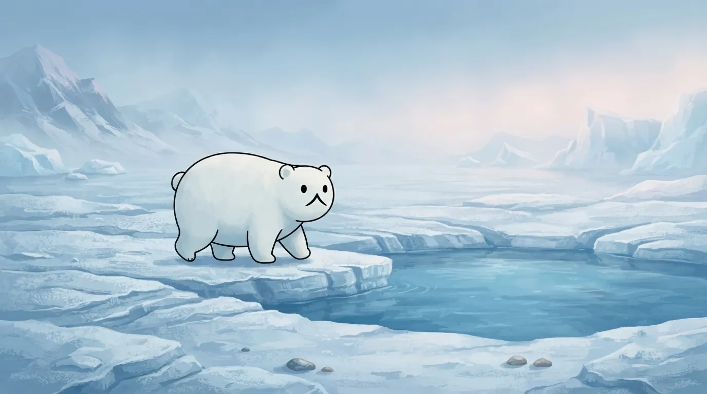
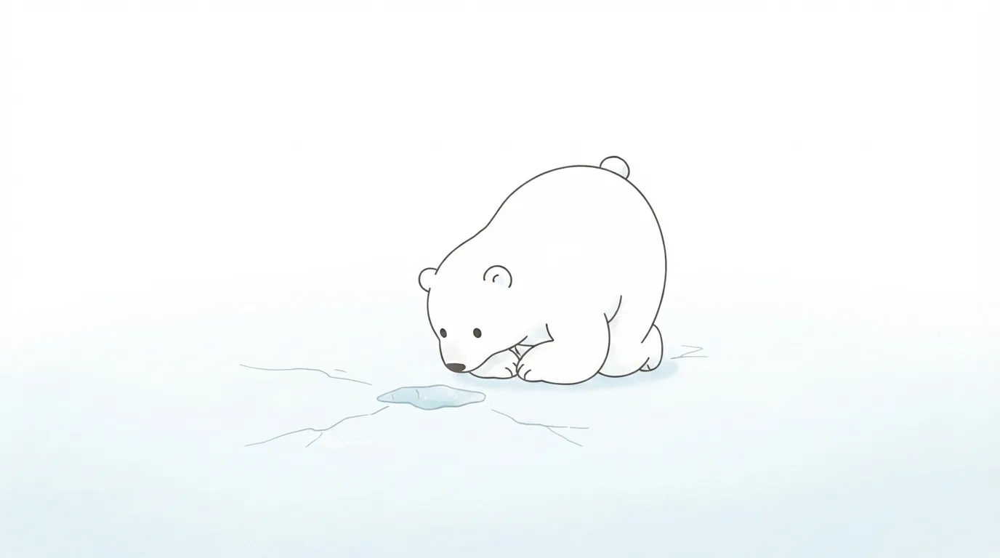
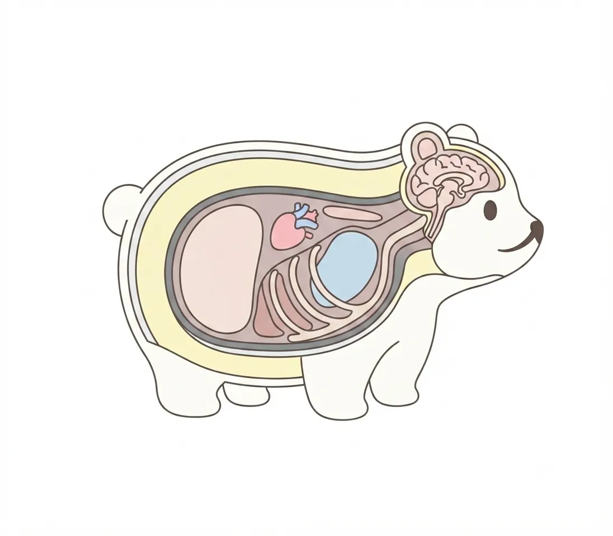
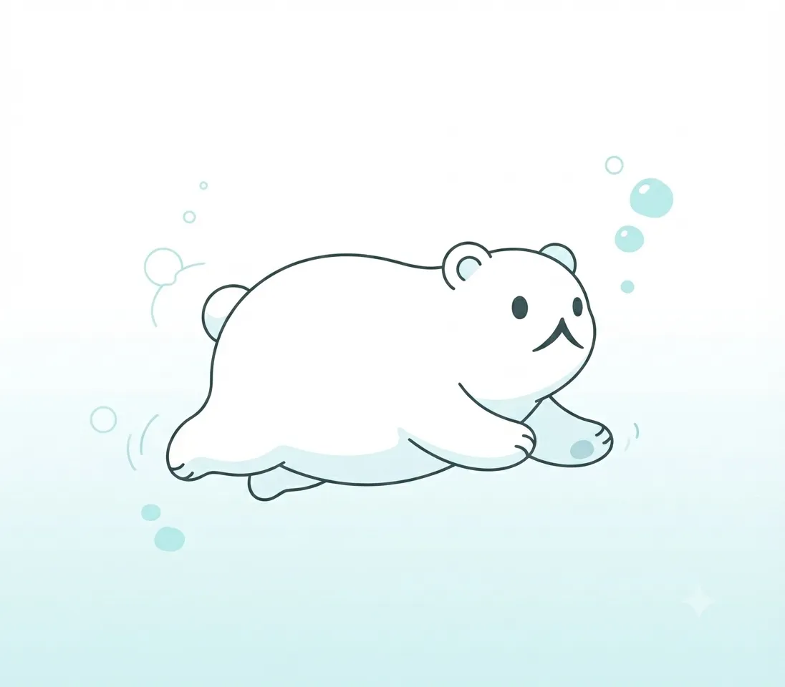
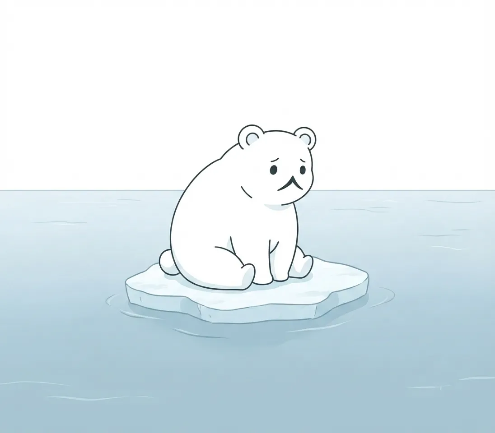

Polar Bear
The star of our zoo. A great white bear that survives the world of ice.
| Scientific name | Ursus maritimus |
|---|---|
| English name | Polar bear |
| Class | Carnivora, Ursidae |
| Range | Arctic sea ice and surrounding coasts |
| Length | Approx. 2.0–2.5 m |
| Weight | Approx. 300–600 kg (male) |
| Notes | One of the largest land carnivores. Adapted to extreme cold with transparent fur, black skin, and thick subcutaneous fat. Preys mainly on seals and is a strong swimmer. |
Hunter on the Ice
A world of ice stretching without end. Standing at its summit, the polar bear is a solitary hunter with a keen sense of smell and astonishing patience. Catching the scent of a seal's breathing hole kilometers away, waiting in silence and letting not a moment's opening slip by — in that figure lies the overwhelming stillness and beauty that only those who have survived a harsh world possess.
Even at our poolside and rocks, the sharp gaze that suddenly fixes on the distance still carries the vivid air of the wild, roaming the vast ice fields of the Arctic. Simply standing there, it radiates a presence that overwhelms all who watch.

A Body Built to Endure the Cold
The reason they don't freeze even in sub-zero seas or blizzards is that their bodies are perfectly adapted to the extreme cold. Beneath the white fur covering the whole body lies a thick layer of subcutaneous fat, shutting out the outside air while firmly protecting body heat.
In fact, each strand of white fur is transparent, appearing to shine white by scattering light. And the skin beneath is, surprisingly, jet black — hidden in this body is an intricate cold-weather system nature has crafted to absorb the sun's warmth efficiently.

Swimming the Sea
A ruler of the land, yet the polar bear is also a superb swimmer. Now and then it glides through the water of the glass-walled pool, so light and graceful that it seems impossible for such a heavy, massive body.
Using its large forepaws like oars, it can swim dozens of kilometers across cold waters — for them, the sea is a hunting ground and a part of life. The relaxed expression it shows underwater, and the moment it dives in dynamically amid a spray of water, are the very highlights that hold visitors' eyes.

Together with the Melting Ice
The powerful, beautiful figure of the polar bear that we witness. Yet at the northern edge of the earth where they live, the sea ice that should be beneath their feet is being lost year by year through the effects of warming. Without ice, they lose their hunting grounds — the reality that survival becomes difficult lies right there.
Meeting a polar bear at this zoo is not merely gazing at a rare animal. It is to reflect on the earth's environment and the shape of its future, which lie behind the life of the one before you. The figure swimming in the northern sea poses an important question to us.
